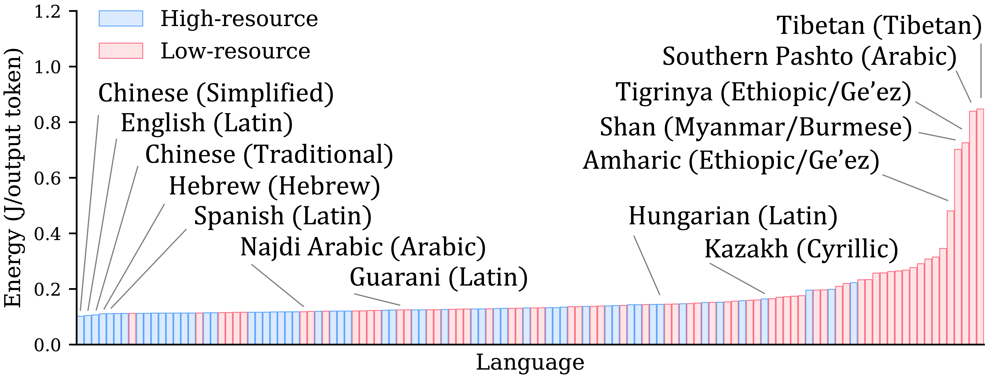
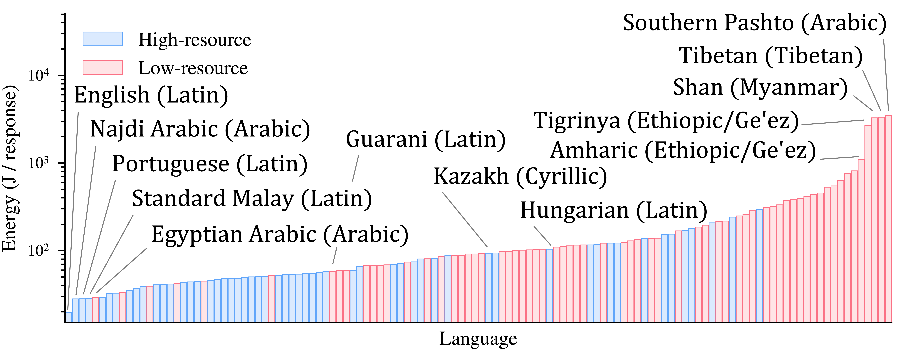

Large language models are increasingly deployed in multilingual settings, yet the energy cost of serving them across languages is poorly understood. We present the first systematic measurement of inference energy across 122 languages, and reveal a stark, persistent language–energy divide: serving low-resource languages costs dramatically more energy — and those same languages are answered least accurately.
variation in per-token energy across languages (single model)
total energy gap — English (17.6 kJ) vs. Pashto (3,147 kJ)
Double penalty: costliest languages are also the least accurate
languages measured on Belebele; divide holds across 5 models, 2 GPUs, 6 batch sizes, 3 tasks


The disparity persists across model families and sizes (Qwen3-8B/14B/32B, gemma-3-27B, Llama-3.1-8B), across GPUs (L40S, RTX 6000 Pro Blackwell), across batch sizes, and across tasks (Belebele, GSM8K, LM-Arena).
@article{language-energy-divide,
title = {The Language--Energy Divide: Measuring Energy Costs of Multilingual LLM Inference},
author = {Deng, Naihao and Shen, Alissa and Feng, Yiming and Nwatu, Joan and
Chung, Jae-Won and Chowdhury, Mosharaf and Chen, Yulong and Mihalcea, Rada},
year = {2026}
}